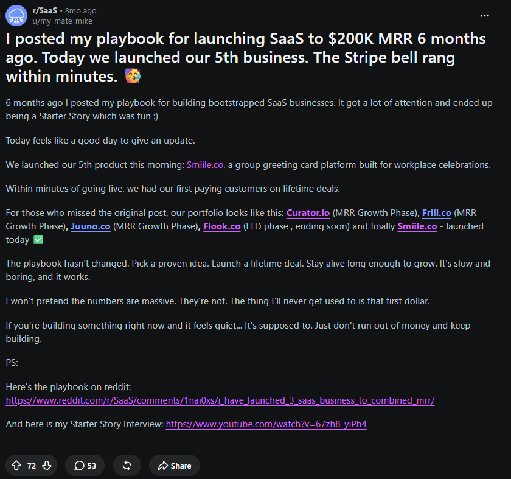
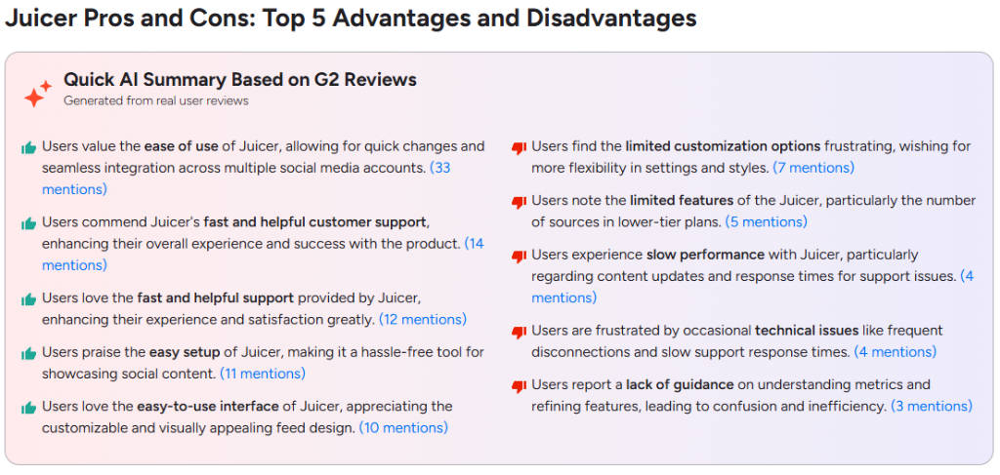
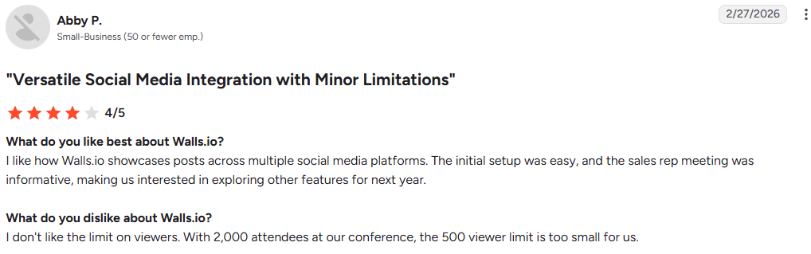
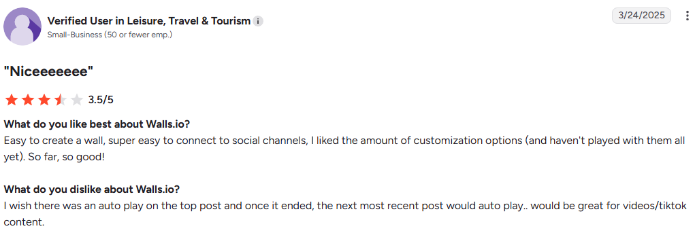
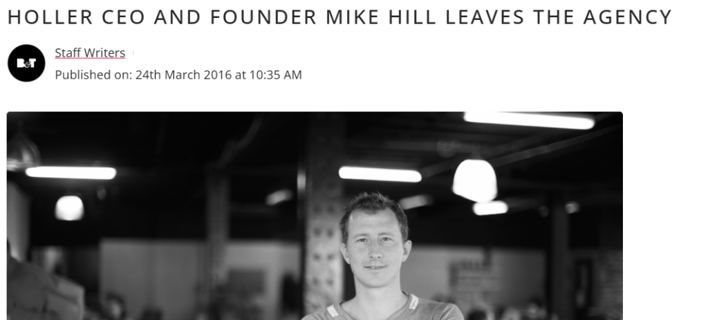
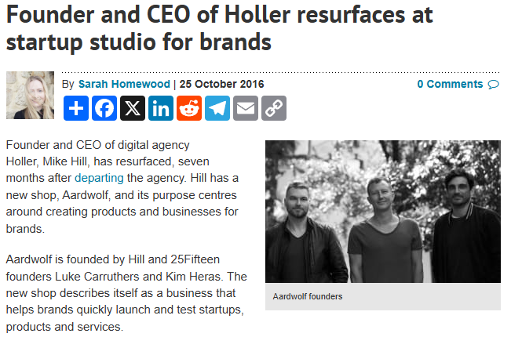
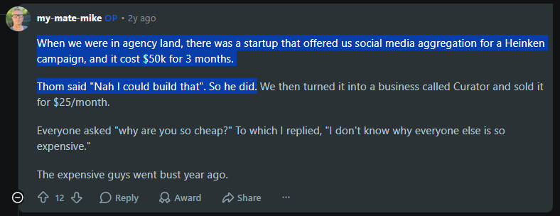
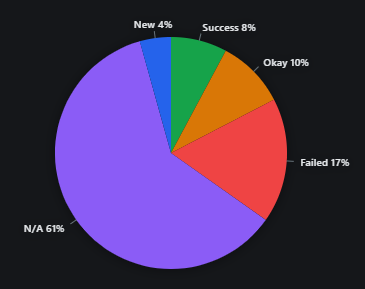

1. The $0 Reality Check
I was lurking on r/SaaS looking through top posts to understand how to sell my product.
I had already created a stupid Gym Management Software. In my head, there was real market demand—most gyms around me didn’t have any software. Heck, the gym I go to uses Excel, with a receptionist sitting there 24/7. I genuinely thought I had found the right market. Nobody was building it cheap, and nobody was listening to their actual needs. My hypothesis was simple: if I listen, ask for feedback, and ship fast, I might build a real business here.
I was completely wrong.
I had zero contacts with any gyms. In-person talks led to ignored phone calls. Cold messaging led to empty read receipts. I couldn’t understand why nobody wanted a solution for their exact problem. Did my product go wrong? Did I sell wrong? I hopped back on Reddit to find answers, ending up right back on r/SaaS.
2. The $200k/mo "Micro-SaaS" Playbook
After some digging, I found a guy who claimed to have built a $200k MRR bootstrapped SaaS portfolio. It felt too good to be true. I did some digging, watched his podcast appearance, and found his Starter Story video. I was genuinely intrigued by how he pulled it off.

I tried to follow his idea, look for problems the way he prescribed, and simulate how he must have done it. His advice sounded clean: don't chase blue oceans. Go on G2, find established categories, look at 2- and 3-star competitor reviews, see what users complain about, and build a simpler, cheaper alternative.
I went through his blog first, specifically his “Alternative to…” SEO hack, and looked through his competitors. Mike was true to his word. I went through his competitors' reviews, and sure enough, Curator.io has every single feature those reviews were asking for: easy to use, customizable cards, LinkedIn feeds. All of it. Mike really did build for those gaps.



3. Reverse Engineering the Origin: Who is Mike Hill?
Then I noticed one glaring thing: I didn’t find this opportunity the way Mike instructs founders to. I didn’t go top-down; I went bottom-up. I started with Curator.io and worked backward to his competitors.
So I decided to test the reverse: can you actually find a product like Curator.io cold on G2? I tried it, and immediately realized that Curator.io and all its competitors sit inside a massive, cluttered category on G2 called “Other Social Media Software”. How the hell did Mike find his specific niche in that sea of noise? There’s software related to security, compliance, AI generation, and everything in between.
Think about what that top-down process actually requires: go through every category on G2, inspect every product sorted by ratings, find ones with bad UI or missing features, check how big the TAM is, ensure it’s not deeply integrated enterprise bloat that requires 50 integrations to function, build it over 2–4 months, write blogs, optimize for LLMs... That’s a 1- to 2-year discovery pipeline, or more. Yet Curator was built in 4 months. How?
I dug deeper. How did he actually find this industry and build it so quickly? It turns out he exited his company, Holler Australia. What does Holler do? It’s an Ad Agency. And Mike wasn't just an employee—he was the CEO of Holler for 10 years!


Wait. His first three SaaS products and his past industry match completely. Mike originally worked at Holler UK as a Flash developer before they sent him to Australia to build their agency outlet. He built it into a powerhouse and had it acquired by the Hannan Family (IPMG). He didn’t discover these problems by scraping G2; he stumbled onto them during a decade of running an agency.
And he doesn’t code backend software. He gives equity to his engineer. Who is the engineer? A developer who worked under Mike at Holler. The pieces click together: a CEO frustrated with expensive, fragile agency software, paired with an in-house engineer who can build a clean solution.

That also explains why his two outside ventures—Puffling and AnyCamp—didn't take off the same way. When he stepped outside the ad agency fleet and tried to guess problems the way we do, it didn't work. His engineer built the backend; Mike drove the distribution. But crucially, he had the network and distribution before day one. He was the CEO of a top Australian ad agency.
Why share the G2 review-mining playbook? Because his posts about helping SaaS founders are marketing too—and great marketing at that. He gives actionable value to build his audience, but his true edge has always been staying in his domain, solving problems he lived with for 10 years, and leveraging proven industry relationships. He knows where the money is and who holds the credit cards.
4. The Solo Trend Surfer: Pieter Levels
Now onto Peter Levels. Right off the bat, his trajectory feels like the famous formula of absurd challenges to generate attention: Distribution over Product.
Let's break his journey down. He ran a successful YouTube channel (Panda Mix Show), made money, and completed his bachelor’s and Master’s in Business Administration by 25. When YouTube demonetized copyrighted music, his income took a hit. Why did he move to Thailand? To radically lower his cost of living and save cash.
His early SaaS, Tubelytics, failed. But while living as a nomad trying to build an automated startup, he hit real, everyday friction. NomadList, RemoteOk, and PhotoAI weren't picked out of thin air. They were built for his domain: nomads, remote workers, and online creators.
The difference is his distribution. Nomads are extremely online. They want tools that help them sustain their lifestyle, and they’re willing to pay. It’s a self-reinforcing flywheel: build for nomads, share transparent metrics, nomads celebrate the success, free word-of-mouth brings more users, and sales compound. He blogs it meticulously, but that transparency is also his customer acquisition engine.
Because nomad trends fluctuate constantly, Peter has to keep riding waves. Today, code is written by AI, allowing him to maintain a hyper-lean one-man operation. If an AI experiment flops, it’s free content marketing; if it takes off, it prints cash. He rides the wave until he has enough dough.
5. The Insider vs. The Influencer
Let's draw a line between both archetypes:
Mike is the B2B Domain Insider. He knows exactly what problem to solve, whom to hire, who holds the corporate credit card, and how to reach them. His distribution was built through a decade of executive leadership. Proven money, proven problems.
Peter is the Cultural Native. His domain is fast-moving, young, and unorganized—waves in an ocean of digital nomads. He rides each wave rapidly, launches constantly, and posts like an influencer to keep his distribution channel warm.
This contrast is stark. Peter has launched countless projects, posting daily to his massive audience. Mike runs a tight portfolio of five products, operating like a traditional business owner.

6. The Uncomfortable Truth
What do we actually learn from this?
As a solo beginner founder, you have neither the domain expertise of Mike Hill, nor the distribution power of Pieter Levels. Both advantages take a decade of hard, focused work to build. That was their moat all along. That is why they sell, and that is why you and I get ghosted by local gyms.
How do we solve this if we are starting from zero? If I had the answer, I wouldn’t be writing this essay. All questions, no answer.
Until the next one!